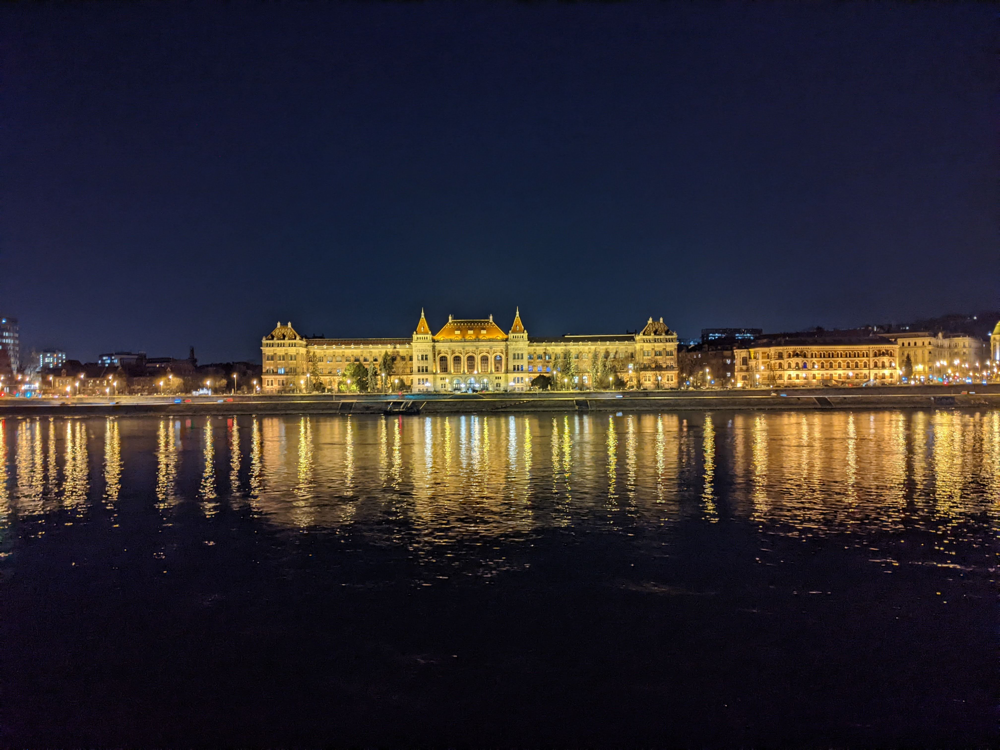

Week of 06 FEB 2022
Week 4 in Hungary

A view across the river towards the end of the scavenger hunt.
This past Saturday the majority of the AIT students got to participate in an all-day, massive scavenger hunt across the downtown area of the Pest side and up into the hills of the Buda side. We all met up in Battyány square on the Buda side of the river where we were given our assignments in large white envelopes. They randomly placed us into 7 groups and the game began immediately. My childhood memories of watching The Amazing Race on CBS came rushing back, and I was determined to win. We had to visit a number of different historical places to gather information, solve puzzles, and take pictures, all while racing against a hard 1730 deadline to be back up at AIT, more than 40 minutes outside of the city center. My group was fortunate enough to have in its ranks Lilli, one of the Hungarian students from the Budapest University of Technology who is taking a few classes with us at AIT. She was integral to our success as a team overall, as she knew the city better than any of us.
One of the many challenges we accomplished required us to discover what a statue was holding in the middle of the Nagy Vásárcsarnok (Central Market Hall) but by the time we arrived there on our quest, they were already beginning to close down for the day and were not permitting any further guests from entering. We tried to tell the guards what we were doing but he just turned us away in broken English saying “Sorry, no more”. Luckily, we had Lilli on our side – she was able to ask the guard in Hungarian what was in the hand of the statue, and he quickly replied “tojas” (egg) with a smile on his face. Later, Lilli saved us again as we tried to enter the historical Parisi Udvar hotel lobby to investigate the year in which it was constructed. The hostess tried to turn us away as there were only restaurant patrons allowed, but Lilli quickly asked her the year, to which she responded 1843, and with that we were on our way again to the next clue. Lilli was not only extremely helpful in translating for us, but she also gave us insight into the ways people felt about the monuments and locations we were visiting, rather than just what we could read off of the signs. I was so grateful and fortunate to have Lilli in our group and although I do not share any classes with them, I am going to make a point of spending more time with the Hungarian students to learn as much as I can from their perspective.
Something else very interesting and slightly unrelated that I have picked up on while walking around the city with native Hungarians is that almost every single person obeys the crossing signal to a T. Every now and then if people are in a rush to catch the tram or bus you may see them run a little earlier than when the crossing light comes on, but that is about the extent of it. Growing up in LA, as well as all the times I have visited NYC, the attitude is exactly opposite. The ground-rules there are simply: when there are no cars, you cross the street, regardless of what color the light is. Here I have crossed a few streets before the light turns and there are no cars coming at all, and people give me strange looks. I am strangely fascinated by this and wonder how in large cities of the US it became so acceptable to do this while here it is so looked down upon. I even asked Lilli: “Is there a severe punishment for walking before the light?” To which she answered: “No, people just don’t do it because the light hasn’t changed yet”. Needless to say I am always reminded that patience is indeed a virtue.
Overall, the scavenger hunt was a blast, I learned a lot and saw even more in the process. Plus, our group won first place overall! Now, however, I want to retrace my steps to all the scavenger hunt locations, but going much slower so as to be able to fully observe and enjoy all the wonderful history this city possesses. All in all we ended up walking over 10 miles that day and covering most of the main historical attractions of this great city.